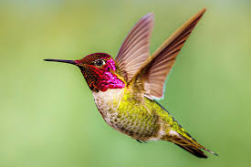
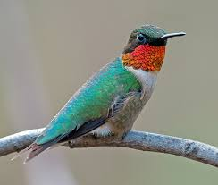

Hummingbirds are birds native to the Americas and constituting the biological family Trochilidae. They are the smallest of birds, most species measuring 7.5–13 cm (3–5 in) in length. The smallest extant hummingbird species is the 5 cm (2.0 in) bee hummingbird, which weighs less than 2.0 g (0.07 oz). The largest hummingbird species is the 23 cm (9.1 in) giant hummingbird, weighing 18–24g (0.63–0.85 oz).
They are known as hummingbirds because of the humming sound created by their beating wings, which flap at high frequencies audible to humans. They hover in mid-air at rapid wing-flapping rates, which vary from around 12 beats per second in the largest species, to in excess of 80 in some of the smallest. Of those species that have been measured in wind tunnels, their top speeds exceed 15 m/s (54 km/h; 34 mph) and some species can dive at speeds in excess of 22 m/s (79 km/h; 49 mph).
Hummingbirds have the highest mass-specific metabolic rate of any homeothermic animal. To conserve energy when food is scarce and nightly when not foraging, they can go into torpor, a state similar to hibernation, and slow their metabolic rate to 1/15th of its normal rate.